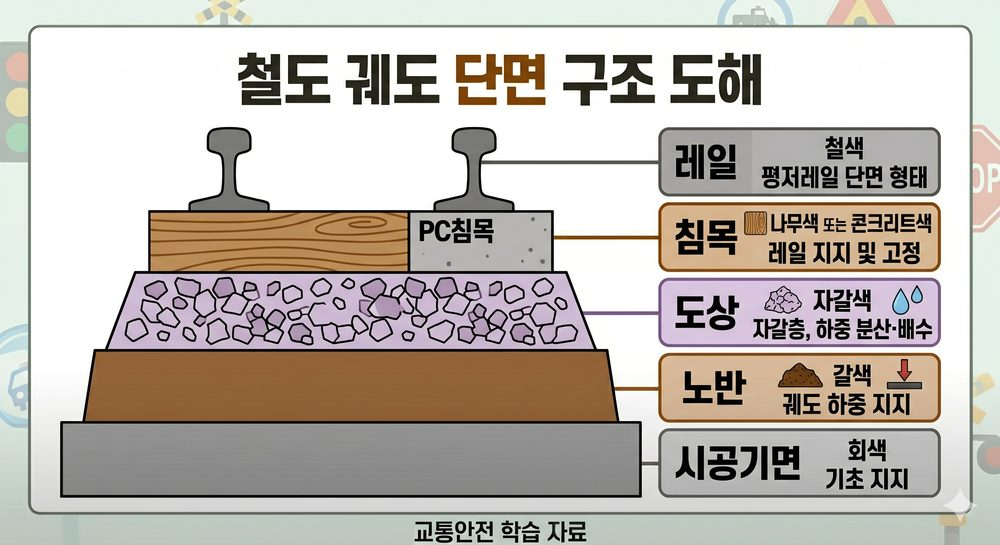

궤도(軌道, track)는 열차가 주행하는 선로의 상부 구조물로, 하부에서 상부 방향으로 도상 → 침목 → 레일 순서로 구성된다.
열차 하중은 레일 → 침목 → 도상 → 노반(노체)으로 순차 전달·분산된다.

| 구성요소 | 역할 | 비고 |
|---|---|---|
| 레일(Rail) | 차륜의 하중을 직접 지지, 안내 및 주행면 제공. 전기적 귀선(궤도회로) 기능도 담당. | 두부·복부·저부 3부분 |
| 침목(Sleeper/Tie) | 레일을 지지·고정하고 궤간(1,435mm) 유지. 레일 하중을 도상에 분산 전달. 레일과 도상 사이 전기 절연. | PC침목(본선 표준) 목침목(분기기 일부) |
| 도상(Ballast/Trackbed) | 침목을 탄성 지지. 열차 하중을 노반에 분산 전달. 배수 기능. 침목 위치(종·횡·수직) 고정. | 자갈도상·콘크리트도상 |
궤도의 4대 기능
① 하중 지지·전달: 열차 정적·동적 하중을 레일→침목→도상→노반 순으로 전달·분산
② 궤간 유지: 좌우 레일 간격(1,435mm 표준궤간) 일정하게 유지
③ 주행 안내: 차륜 플랜지가 레일에 안내되어 탈선 방지
④ 탄성·완충: 도상·체결장치가 충격을 흡수하여 승차감 및 구조물 보호
Q1 정답 ④
도상의 기능: 하중 분산·전달, 침목 고정, 배수, 탄성 제공, 충격 흡수. 레일 이음매 파단 방지는 레일 용접·앵커의 역할이다.
Q2 정답 ④
레일 열팽창 흡수는 신축이음매 및 레일 앵커의 역할이다. 침목은 궤간 유지·하중 분산·절연이 주 기능이며, 열팽창 흡수는 담당하지 않는다.